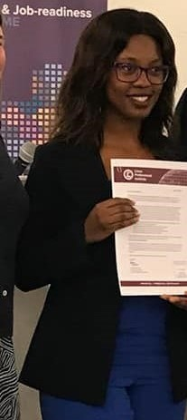

<!DOCTYPE html>
<html> 
    <head></head>
    <title>About my self</title>
    <link rel="stylesheet" href="style.2.css"/>
    </html>
<body>
    
        <div class="topnav">
        <ul>
        <a href="index.html">Home </a>
        <a href="about.html"> About</a>
        <a href="contact.html">Contact Me</a>
        
            </ul>
            </div> 

      <center>         <h1> ABOUT MY SELF </h1>
      <p><h3>I am a Web site developer and i'm based in Cape town.
        I am obsessed about developing and coding and designing.
        I fell in love with coding when i was still in high school,so
        i decided to pursue my career in IT and i did ICT Infrastructure at College of Cape town under CapaCiti,and
        i was lucky enough i got an opportunity to be part of the Younglings Programme.
        I am now advancing my career as a Web developer and  i must say i'm really enjoying it,
        Below is the skills that i have acquired through capaciti program and some i got them on my own.
                               Ccna 1&2
                               <br>
                               It Essentials
                               <br>
                               Cyber Security
                               <br>
                               Linux
                               <br>
                             html and css
                             <br>
                    And this is my very first project</h3></p></center> 

                    <center> </center>
        </body>
        </html>
        


    

</body>


</html>